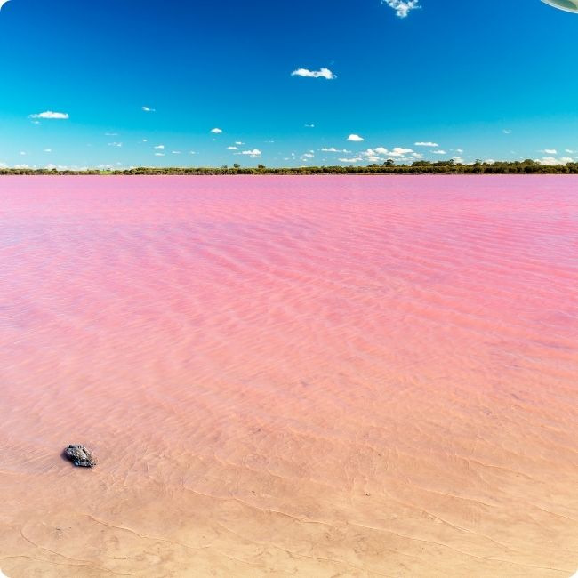
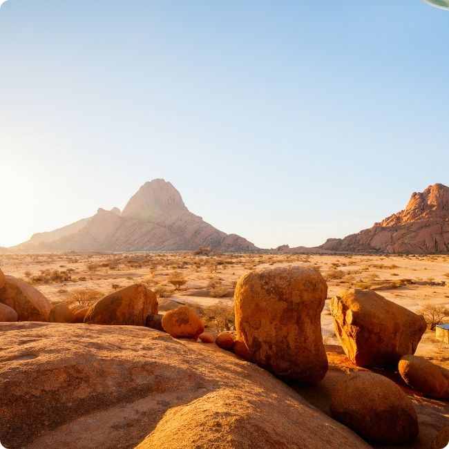
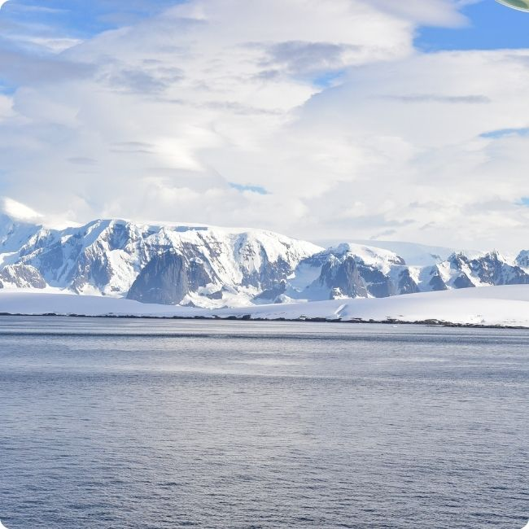

Get ready to giggle, gasp, and learn cool stuff about the world! 🌎✨
🏰Did you know? There’s a pink lake in Australia called Lake Hillier! Yep, it’s really bubblegum pink, not a filter!

🪐
There's a real place in Namibia that looks like Mars! It's called the Namib Desert and has gigantic red sand dunes!

❄️
Antarctica is actually a desert! Even though it's covered in ice, it's super dry — it hardly ever snows! 🧊
